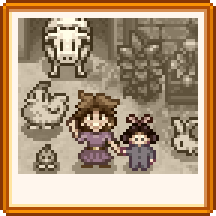
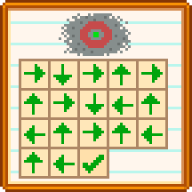

Notes secrètes
Les Notes secrètes sont des notes collectables pouvant être débloquées en marchant vers l’arrêt de bus depuis la ferme pendant l'hiver entre 06:00 et 16:00. Le joueur verra une séquence durant laquelle une "silhouette sombre" (qui est probablement Krobus) sursaute et s'enfuit. Après avoir vu la séquence, la quête "Un mystère hivernal" est ajoutée au journal de quête.
Notez que la séquence ne s'activera pas si le joueur est sur un cheval.
Les traces de pas de la silhouette sombre conduiront a un buisson a gauche du Centre communautaire. Si le joueur interagit avec le buisson, la silhouette sombre va en sortir, s'excuser d'avoir volé, donner une Loupe au joueur, puis s'enfuir. La Loupe donne au joueur la possibilité de trouver les notes secrètes lorsqu'il creuse, coupe des arbres, mine, pêche ou tue des monstres.
Une fois trouvée, une Note Secrète peut être lue en la sélectionnant dans la rangée du haut de l'inventaire et en faisant un clique droit dessus (comme si l'on consommait un aliment). Cela va ajouter la note a la collection du joueur, et ajouter l'onglet "Notes Secrètes" a l'onglet "Collections" du menu du joueur.
Certaines notes vont donner les cadeaux "Aimés" de certains personnages, alors que les autres auront des images représentant des solutions à des puzzles.
Les notes secrètes peuvent être données en tant que cadeau, mais elles sont toutes universellement détestées.

Les Sources des Notes Secrètes
Le tableau suivant liste les différentes actions pouvant faire apparaître une note secrète.
Lorsque le pourcentage est validé, le jeu essaie trois fois de créer une note secrète. Chaque essai génère un nombre par rapport au nombre total de notes. Si le nombre correspond à celui d'une note qui n'a pas encore été obtenue, le jeu fait apparaître la note secrète et le processus de validation s'arrête.
| Activité | Chances |
|---|---|
| Graines [1] | 0.9% |
| Monstres [2] | 3.3% |
| Abattage d'arbre (Chaque coup de hache) [3] | 0.5% |
| Pêche [4] | 8% de remplacer des dechets |
| Lieu d'artéfacts [5] | 11% (Après le processus de validation d’artefact ou de cueillette d'hiver) |
| Pierre [6] | 1% |
| Point de ressources * [7] | 5% |
| Culture géante [8] | 100% |
* Point de ressources = Grande souche, Grande bûche, Météorite, ou Bloc rocheux (dans ou en dehors des Mines).
Notes secrètes
Note secrète # 1
| Note |
|---|
| Page du journal d’Abigail
"Ce que j’aime : l’odeur de citrouille sculptée, garder une améthyste sous mon oreiller, les gâteaux au chocolat, le goût de l’anguille épicée et le réconfort de la tourte aux mûres de Maman (j’aime bien manger !)" |
Note secrète # 2
| Note |
|---|
| Liste de courses de Sam
Ceux que tout le monde adore Sebastian : larme gelée, sashimi
|
Note secrète # 3
| Note |
|---|
| Écrit de la main de Leah
Mon idée d’un dîner parfait serait une salade, du fromage de chèvre, des truffes et du vin. En dessert, je voudrais un muffin aux graines de pavot. Miam ! Si quelqu’un m’offrait l'une de ces petites douceurs, je fondrais littéralement. |
Note secrète # 4
| Note |
|---|
| Note de Maru
Pièces encore nécessaires pour ma plus grande invention ! *Lingot d’or
|
Note secrète # 5
| Note |
|---|
| Écrit de la main de Penny :
Je voudrais donner à chacun ce qu'il aime ! Maman : panais, patates douces glacées, PAS DE BIÈRE !
|
Note secrète # 6
| Note |
|---|
| Commandes spéciales du saloon
Maire Lewis : assiette de récompense de l’automne
Marnie : tarte à la citrouille
Demetrius : ragoût aux haricots
Caroline : taco de poisson
|
Note secrète # 7
| Note |
|---|
| Page d'un journal intime...
... Il n’y a que quelques célibataires plus âgés en ville, et aucun d’entre eux n’est parfait ! Harvey est vraiment anxieux et faible, mais je sais qu’il ferait un époux fidèle et dévoué. Il aime le café et les cornichons. Elliott est un peu mélodramatique, mais il a un beau menton. Il aime les beignets de crabe et les grenades. Shane est désordonné et asocial. Mais je pense que son apparence revêche est un mécanisme de défense qui cache sa gentillesse intérieure. Il aime la bière, la pizza et les poivrons. |
Note secrète # 8
| Note |
|---|
| Pour Haley et Emily
J’espère que vous allez bien ! Nous vous avons envoyé vos cadeaux préférés : un gâteau rose et des tournesols pour Haley ainsi que des pierres précieuses et de la laine pour Emily ! - Bisous. Maman et Papa. |
Note secrète # 9
| Note |
|---|
| Régime de musculation d’Alex :
*Petit-déjeuner complet
(j’ai appris à aimer ce poisson... Je sens la protéine dans mon corps !) |
Note secrète # 10
Ne devient disponible qu'après avoir terminé la quête "Défi de Qi".
| Note |
|---|
| Quelqu’un vous attend au niveau 100 dans la caverne de Tête de Mort... |
| Details |
|---|
| Lire la Note Secrète #10 ajoute la quête "Note énigmatique" au journal. Pour compléter cette quête, il faut atteindre l'étage 100 de la Caverne du Crâne. Une fois arrivé, une cinématique se joue durant laquelle Monsieur Qi vous félicitera pour être descendu jusqu'au niveau 100 sans avoir utilisé d'Escalier, ou dans le cas contraire, vous qualifier d' "intelligent" mais non "honorable" pour en avoir utilisé. Dans tous les cas, il vous récompensera d'un "Lait de serpent d'iridium", augmentant la Santé maximale de 25 de façon permanente. |
Note secrète # 11
| Note |
|---|
|  |
Note secrète # 12
| Note |
|---|
| J’ai trouvé de bonnes choses en cherchant dans les poubelles, durant mes jours de chance.
Parfois, on peut trouver le "plat du jour" derrière le saloon... généralement encore frais ! Pour le dessert, je cherche dans la poubelle des Mullners pour avoir des cookies. Pour les trésors, vérifiez les poubelles chez le forgeron et au musée. |
Note secrète # 13
| Note |
|---|
| Midi PILE. Dernier jour de la saison Vérifiez les buissons au-dessus du terrain de jeu. |
| Solution |
|---|
| A midi pile, le 28e jour de n'importe quelle saison, interagissez avec le buisson situé au-dessus de l'aire de jeu pour obtenir un Junimo en peluche. |
Note secrète # 14
| Note |
|---|
| J’ai caché quelque chose derrière le centre communautaire. |
| Solution |
|---|
| Derrière le Centre communautaire, cachée par le toit, contre la barrière de bois à droite il y a une Sculpture de Junimo qui peut être récupérée grâce à une pioche (ou une houe sur la version iOS). |
Note secrète # 15
| Note |
|---|
| Spectacle de Sirène : 1-5-4-2-3 |
| Solution |
|---|
| Pendant le Marché nocturne, entrer dans le bateau le plus à droite pour commencer le spectacle de la sirène. Après le spectacle, cliquer sur les coquillages dans l'ordre indiqué (numéroté de gauche à droite) pour obtenir une Perle. |
Note secrète # 16
| Note |
|---|

|
| Solution |
|---|
| Creuser juste un cran à droite du gros rocher au nord de la Voie ferrée pour avoir un Coffre au trésor. |
Note secrète # 17
| Note |
|---|

|
| Solution |
|---|
| Tout au nord du Marché Joja , creuser à l'endroit le plus au nord possible sur le côté droit de la rive pour obtenir une Poupée étrange (vert). |
Note secrète # 18
| Note |
|---|

|
| Solution |
|---|
| Rendez-vous au Désert de Calico et utilisez la houe au Sud-Ouest du banc qui se situe au Sud-Est de la zone pour déterrer une Poupée étrange (jaune). |
Note secrète # 19
| Note |
|---|

|
| Solution |
|---|
| Il s'agit d'une représentation de la maison 1 allée des Saules avec une série de flèches. Commencez au carré vert qui est représenté, il est directement devant la porte d'entrée de la maison, suivez chaque flèche jusqu'à ce que votre personnage ne puisse plus avancer du tout. Premièrement, marchez vers la gauche jusqu'à toucher un obstacle permanant. Puis marchez en suivant l'a prochaine flèche jusqu'à toucher un obstacle permanant et ainsi de suite.
Le chemin vous conduira autour de la maison, à travers la ville, et finalement à une statue Lewis en or massif cachée derrière la maison du Maire Lawis. Pour trouver la statue et la récupérer dans l'inventaire du personnage, mettez vous simplement sur la case finale et faites un clique-droit sur le sol. Placez la statue n'importe où dans Pélican Ville donnera pour résultat un secret additionnel. |
| Secret additionnel | ||
|---|---|---|
La statue Lewis en or massif peut être placée n'importe où dans Pélican Ville. Si la statue n'est pas détruite par un villageois, elle sera remplacée le jour suivant par une Plante pourrie, et le joueur recevra une lettre non signée dans la boîte aux lettres contenant
La statue apparaîtra dans la chambre de Lewis (90% de chance) ou dans la chambre de Marnie (10% de chance). La statue peut être retirée et replacée dans Pélican ville encore et encore, et sera remplacée à chaque fois par une Plante pourrie. Le joueur ne recevra la lettre non signée qu'une seule fois. |
Note secrète # 20
| Note |
|---|
|  |
| Solution |
|---|
| C'est une représentation du centre de la ville. Commencez au centre de l'œil au centre de la ville, suivez la direction des flèches jusqu'à ce que votre personnage percute un obstacle permanent. Le chemin vous emmènera dans la ville, sur le pont menant au Marché Joja, et finalement à un camion garé à côté du Marche Joja. Interagissez avec le camion vous permettra de parler avec le chauffeur qui a besoin d'une Patte de lapin. Si vous en avez une dans votre inventaire , vous pouvez l'échanger contre un Charme spécial qui augmentera de manière permanente votre Chance. |
Note secrète # 21
| Note |
|---|

|
| Solution |
|---|
| À exactement 00:40 dans la nuit, interagissez avec le grand buisson au Nord-Ouest du pont qui relie Pélican Ville et La plage. Marnie et Lewis sauteront hors du buisson. Mais qu'étaient-ils en train de faire!?
(Note: Vous pouvez le faire même le 16 hiver, quand Marnie est sur l'écran revenant du Marché nocturne.) |
Note secrète # 22
| Note |
|---|
| Salutations, <Nom> ...
As-tu trouvé mon petit "secret" dans les tunnels sombres ? J’ai hâte de te rencontrer ! -Qi |
| Solution |
|---|
| Allez à l'arrêt de bus avec une Pile, et allez vers l'ouest depuis le bus jusqu'au tunnel. Placez la batterie dans la boîte sur le mur au centre du tunnel pour commencer la quête Le mystérieux Qi.
Notez qu'il n'est pas nécessaire de trouver la note secrète #22 pour démarrer la quête Le mystérieux Qi. |
Note secrète # 23
| Note |
|---|
| Si vous pouuuvez lire ceciiii... venez dans la foooorêt seecreete. Appoortez du sirooop d'éraaable. |
| Solution |
|---|
| Lire la note secrète #23 ajoute la quête "Note étrange" au journal. Pour accomplir la quête, rendez-vous dans la forêt secrète entre 6h et 19h avec du sirop d'érable dans l'inventaire pour déclencher une cinématique dans laquelle un ours partage sa connaissance particulière des baies. Cela augmente de manière permanente le prix de vente des mûres et de Saumon par 3.
Après avoir visionné la cinématique, une icône de patte d'ours intitulée « "Savoir de l’ours" » apparaîtra dans l'onglet Objets et pouvoirs spéciaux du menu du joueur. |
Note secrète # 24
| Note |
|---|
| C'est une page du livre de M. Jasper :
... On raconte que les créatures, connues sous le nom "d’esprits de la forêt" ou "Junimos", apparaissent dans des bâtiments abandonnés après que leurs graines soient tombées. En règle générale... quand les humains seront partis et que la nature reprendra possession de son territoire, les Junimos apparaîtront. La croyance populaire raconte que les Junimos possèdent une sorte d’affinité avec les pierres précieuses qui sont placées à l’intérieur de leurs petites huttes... Bien sûr, toutes ces affirmations proviennent de sources douteuses, non vérifiées... À ma connaissance, la simple existence de ces créatures n’a jamais été prouvée !", |
| Solution |
|---|
| Placer un minerai ramassé, une gemme, ou un minerai de géode dans une Hutte de Junimo changera la couleur des Junimos qui feront les récoltes. Les Junimos s'adapteront généralement à la couleur du minerai utilisé, y compris la couleur prismatique si un Tesson prismatique est utilisé.
Le jeu utilise le même code pour colorer les Junimos que celui de la teinture de vêtement de la Machine à coudre. Une table des couleurs complète peut être trouvée sur la page de la Teinture. |
Note secrète # 25
| Note |
|---|
| J’ai "emprunté" un collier à ma mère, mais je l’ai perdu quelque part vers les bains publics... Elle va faire une crise de nerfs si elle s’aperçoit qu’il a disparu ! |
| Solution |
|---|
| Pêcher dans l'eau à l'extérieur du spa durant le printemps, l'été ou l'automne pour trouver un collier orné. En portant le collier, allez parler à Caroline pour gagner 50 points d'amitié avec elle, ou à Abigail pour gagner 100 points d'amitié avec elle. |
Note secrète # 26
| Note |
|---|
| Secrets anciens de fermier, paragraphe 37 :
Il n'y a pas de meilleure aide qu'un Junimo nourri aux raisins secs... |
| Solution |
|---|
| Placer des Raisins dans une Hutte de Junimo leur donnera une chance de doubler leurs récoltes. Les Junimos peuvent consommer un sachet de Raisins par semaine, et un petit panneau sera placé à l'extérieur de leur hutte. Plusieurs sachets peuvent être placés dans la hutte, ils seront consommés au fil du temps. Les Raisins sont obtenus en plaçant 5 grappes de Raisin dans un Déshydrateur et prendront 1750m (≈29h) à être produits. |
Note secrète # 27
| Note |
|---|
| Au moment où tu trouveras cette note, je pense que tu auras déjà vécu dans la vallée depuis un certain temps. J'espère que tout se passe bien ! Je suis honoré que tu perpétues la tradition familiale d'agriculture et que, grâce à cette noble entreprise, tu apportes plus de vie et d'abondance à toute la vallée de Stardew... un endroit très cher à mon cœur. -Grand-père. P.S. ...J'ai caché un secret très spécial pour toi quelque part dans la vallée. C'est comme un recueil de mes plus grandes découvertes. Un jour, peut-être, tu le trouveras. |
| Solution |
|---|
| Dans le sud de la Forêt Sève-Cendreuse, la Grotte de maîtrise est disponible, près des Égouts . |
Références
- ↑ Voir Object::cutWeed dans le code du jeu.
- ↑ Voir GameLocation::monsterDrop dans le code du jeu.
- ↑ Voir Tree::performToolAction dans le code du jeu.
- ↑ Voir GameLocation::getFish dans le code du jeu.
- ↑ Voir GameLocation::digUpArtifactSpot dans le code du jeu.
- ↑ Voir GameLocation::breakStone dans le code du jeu.
- ↑ Voir ResourceClump::performToolAction dans le code du jeu.
- ↑ Voir GiantCrop::performToolAction dans le code du jeu.
Historique
- 1.3 : Introduit.
- 1.4 : Correction d'un bug empêchant la cinématique de l'ombre de se déclencher en sortant de la ferme par la ou les tuiles du bas. Ajout des notes secrètes #24 et #25. Réduction du taux de chute des pierres brisées (de 1% à 0,75%).
- 1.6 : Mise à jour de la Note Secrète #24 et ajout des Notes secrètes #26 et #27.